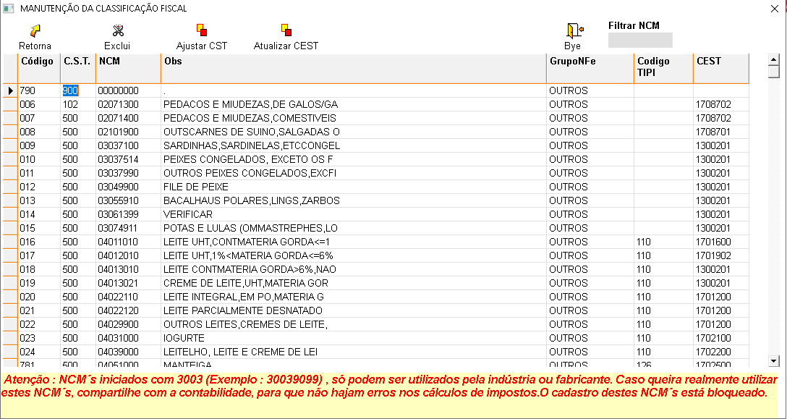

É o conjunto de operações que envolve o NCM (Nomenclatura Comum do Mercosul) e a situação tributária do produto. Aperte no topico que deseja para conhecer a funcionalidade de cada opção.
+Qual o procedimento para cadastrar uma classificação fiscal?
No sistema:
- Selecione a linha que está em branco, preencha com os dados pertinentes à classificação fiscal e tecle ENTER até a próxima linha para salvar.
OBS.: As informações sobre cada campo estão no final da página.
+Como alterar os dados de uma classificação fiscal?
- Selecione a classificação fiscal, faça as alterações desejadas e tecle ENTER até a próxima linha para salvar.
+É possível excluir a classificação fiscal?
- Sim, mas deve-se atentar aos seguintes detalhes:
- Se existirem produtos vinculados a esta classificação fiscal, a exclusão não será permitida.
+Descrição dos campos de classificação fiscal:

- Código: Gerado automaticamente pelo sistema.
- C.S.T.: Informe a razão social do convênio.
- NCM: Informe o NCM do produto (notas fiscais de medicamentos vêm com NCM, verifique se o NCM está correto).
- Obs: Informe se tiver alguma observação referente ao NCM.
- GrupoNFe: Informe o grupo NFe ao qual pertence o NCM (Medicamento / Outros).
- Código TIPI: Informe o código TIPI do NCM.